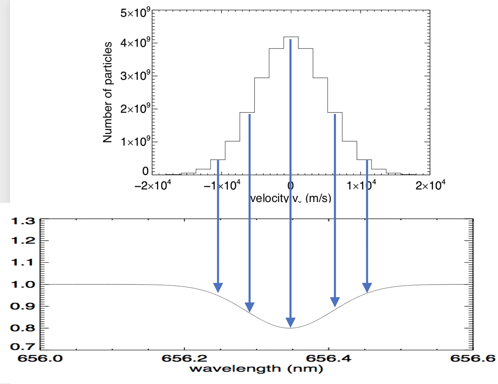

Forrige side🙂 🙁Formen til spektrallinjer

Fluksen F(λ) utenfor selve spektrallinja kaller vi kontinumsfluksen. Totalfluks i selve spektrallinja er altså kontimumsfluksen pluss formen på spektrallinja. Vi skal i det følgende anta at vi normaliserer fluksen F(λ) slik at kontnumsfluksen er 1. Dermed blir F(λ) = 1 utenfor spektrallinja, på begge sider. Minimumsfluksen (hvis vi antar absorpsjonslinje), kaller vi Fmin. Bølgelengden i sentrum kaller vi λ0 og standardavviket σ. Kan du skrive et uttrykk for F(λ) uttrykt kun ved Fmin, λ0, σ og selvfølgelig også λ? Tenk deg godt om og skriv ned et forslag før du blar om. Neste side